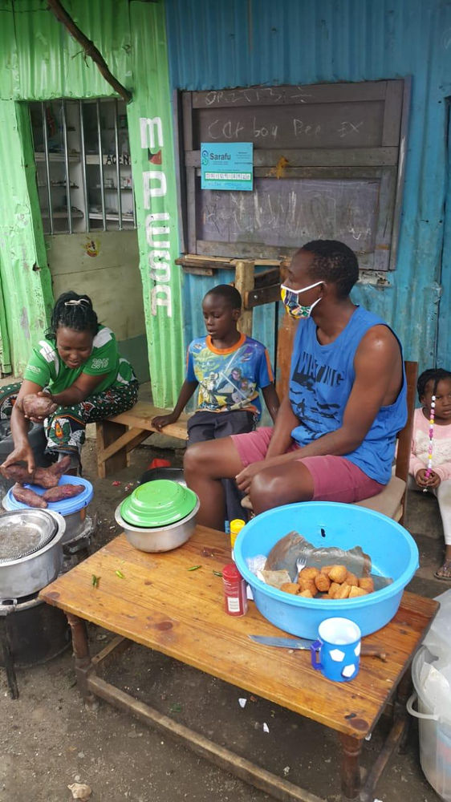
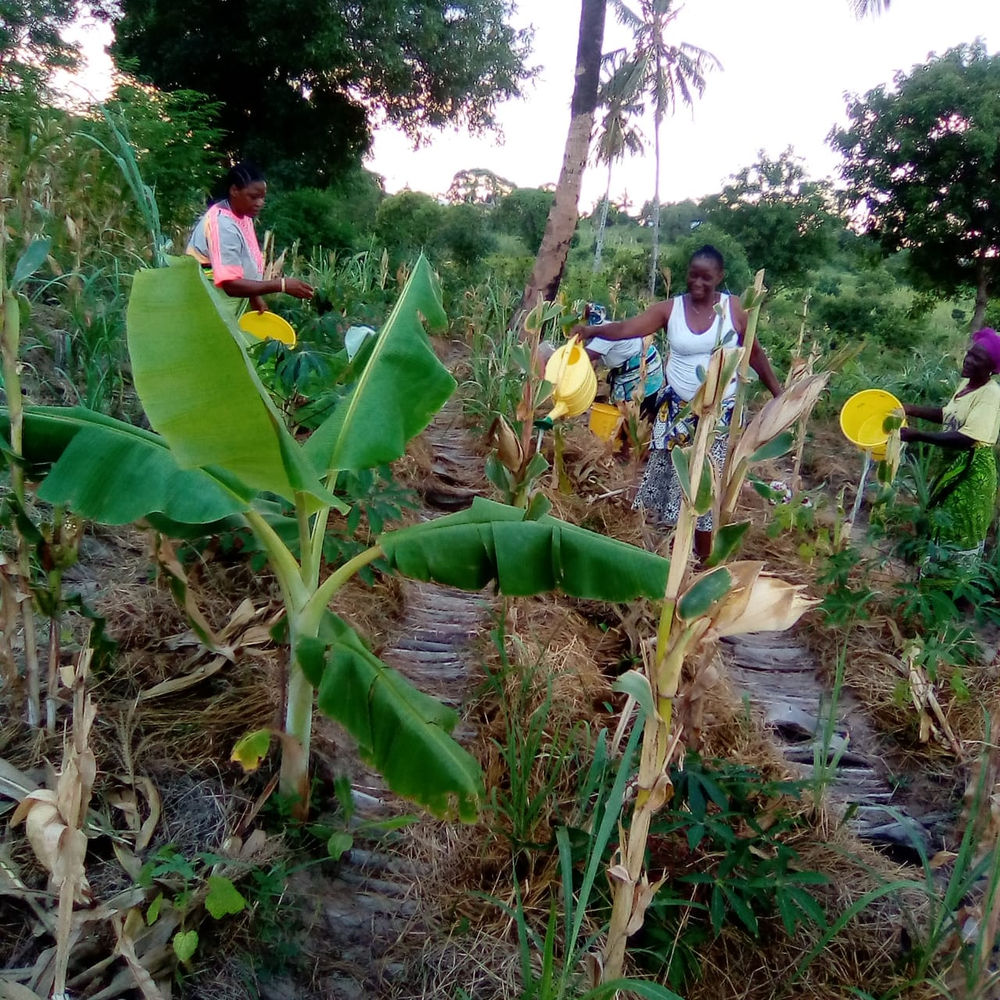
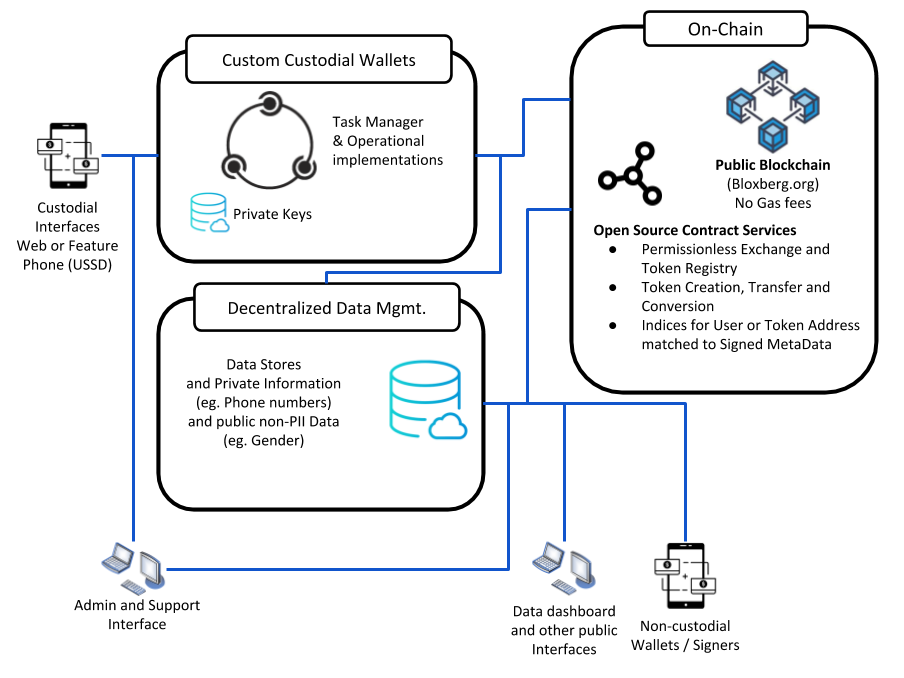

2020 Kenyan CICs in Review
Brief Historical Overview
Starting in 2010 Grassroots Economics worked with local communities to issue vouchers aka Community Currencies (CCs) as a medium of exchange with the belief that CCs could enable communities to develop a source of local credit based on productive capacity and local values, while creating a monetary system better suited to eradicate poverty and the multiple indicators of deprivation targeted by the UN’s Sustainable Development Goals. After working with over a dozen communities by 2018 we began to support communities in digitizing their CCs.
2020 Survival Mode
Starting in 2020 we embarked on the huge task of developing, refining and modularizing open source infrastructure that would enable communities to issue and manage their own Community Inclusion Currencies (CICs). CICs are blockchain contracts that enable a community to issue a digital voucher against claims of future production and create a possibility of conversion between that voucher to other similar vouchers.
With support from DOEN.nl, Innovation Norway and the Red Cross we grew our Kenyan support teams to 12 and our software development team to 5 people. While our teams have worked all year on supporting existing users and developing these systems (to be launched in January), all the existing CCs over the years were replaced with a single Basic Income token called Sarafu as a stop-gap while we continued technology development.
Due to COVID and Red Cross involvement the usage of Sarafu bloomed from around 1,000 users to reach over 41,700 users and 263 Million Sarafu (roughly 2.5 Million USD equivalent) have traded hands in over 335,000 transactions between users with feature phones (no internet). Sarafu is issued to new users and also recollected as a holding fee each month and redistributed to users. The total supply was based on population projections in targeted areas and has been as a bootstrapping mechanism for introducing the concept of community currency. In 2021 communities will be creating again their own CICs and can choose to use Sarafu as a way to connect their CICs to others. Note that Sarafu and CIC circulation data is anonymous and used to target humanitarian support such as cash transfer programs. Read more about Sarafu Network and check out the data dashboard and research here.
Using CCs to support the development and maintenance of communal farms has been one of the core concepts of our work since we started implementing in rural areas in 2014 – where the CC is a promise against future production of the farm and can be used to buy food after each harvest. In 2020 we began integrating Syntropic Agroforestry into demo farms which utilizes, bio-intensive mixed-crop planting, mulching on-site, and successional growth and rotations. These techniques have enabled us enter traditional maize farms and convert them into regenerative agriculture plots. These farms aka Food Forests create productive capacity and a foundation for resilient food systems. The CCs help organize the labor and care for these communal structures.
Overall 2020 has taught us that a free medium of exchange that can be used in vulnerable communities is extremely important especially during times of crisis. ... 2020 We're glad it's over!
2021 Goals
We’re extremely excited about using CICs for developing support networks for vulnerable communities and households, and especially food systems. With hardened software and materials, we’ll be able more and more to support other organizations to develop, copy and use the CIC infrastructure. A few more goals are shown below:
- Develop Training Materials
- Support Food Forest creation
- Enable communities to create their own interconnected tokens (January) (no connection to Kenyan Shillings)
- Develop web-based non-custodial systems (wallets and token creation interfaces)
- Develop the blockchain contracts for the Sarafu token to act as a type of UBI / Dividend
- Document and enable more interoperability with other protocols, APIs chat bots, market places
- Develop Voting systems for governance and tax redistribution
- Develop Standard Operating Procedures for humanitarian organizations.
- Develop different reserve pools (network tokens (Sarafu), stable tokens, carbon credits).
- Develop parametric triggers for aid injection
- Develop an SDG Impact Index related to CIC transaction data (categories, gender .. )
Keep reading for the brave techies:
The open-source infrastructure allows for both custodial and non-custodial systems where users can define and write contracts (which act as programmable currencies) onto a blockchain - such as bloxberg.org - and enable those currencies to interact with each other.